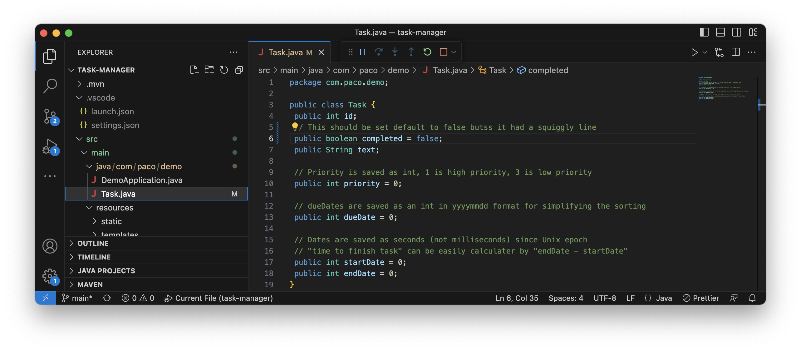
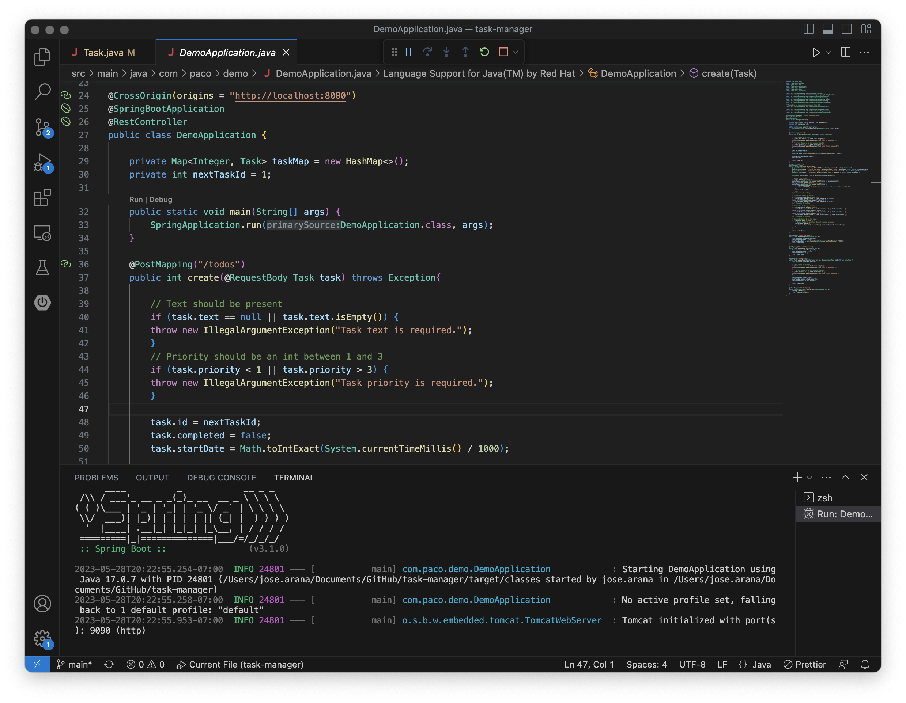
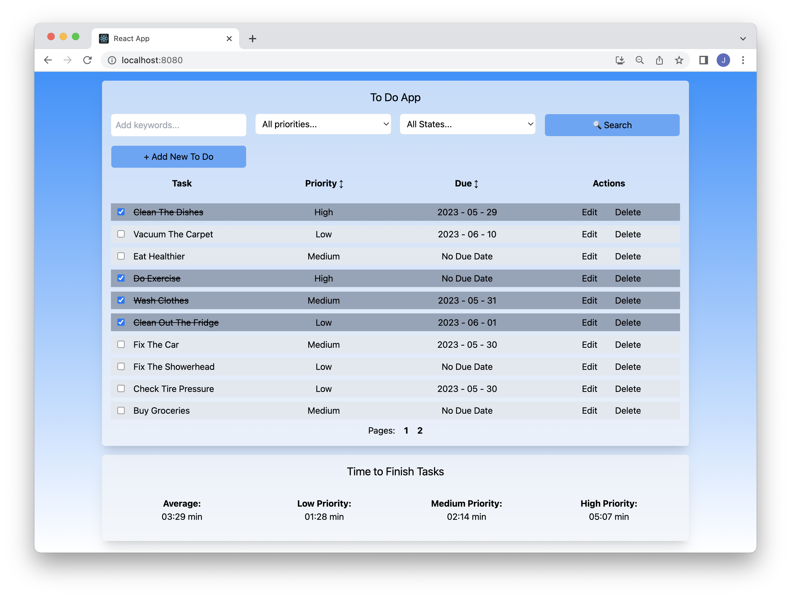
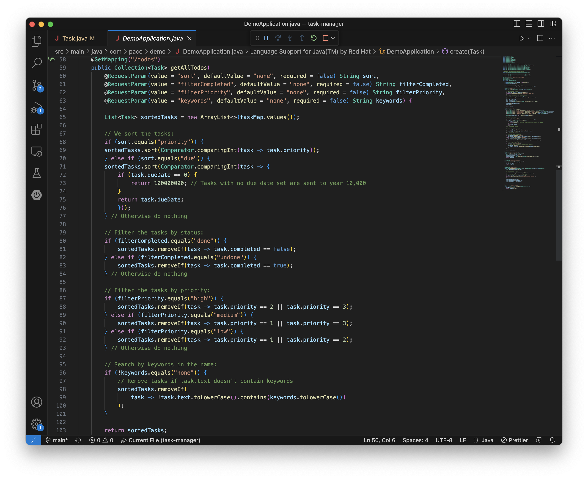
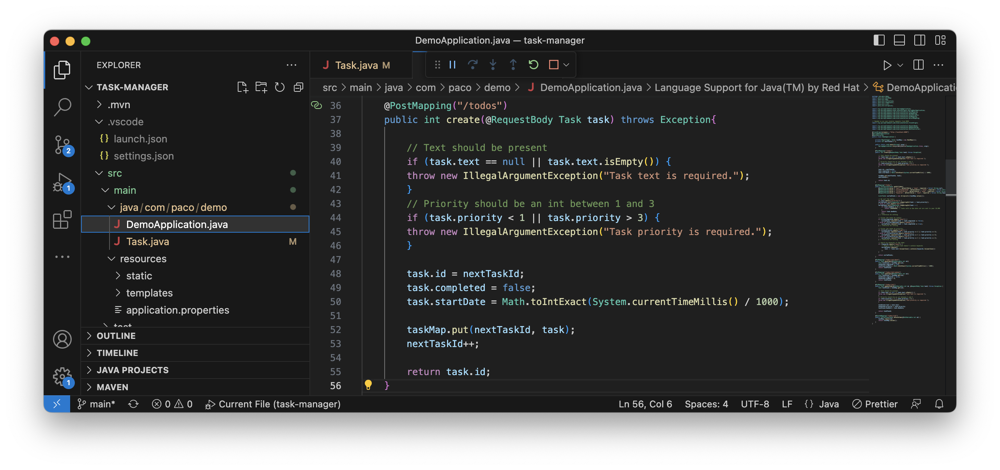
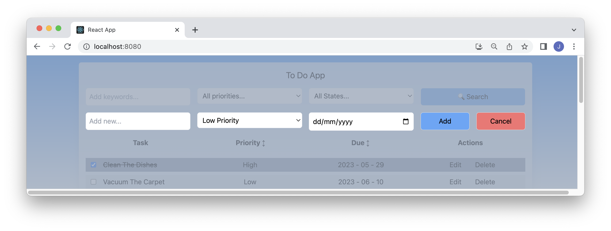
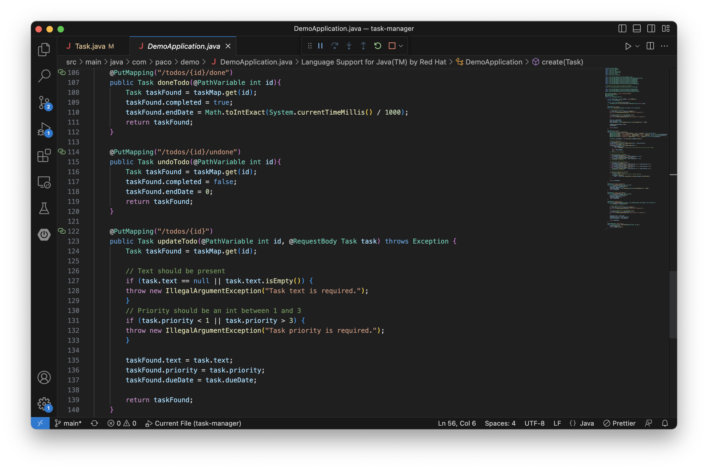
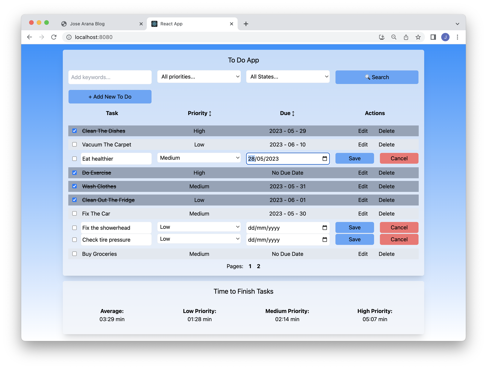
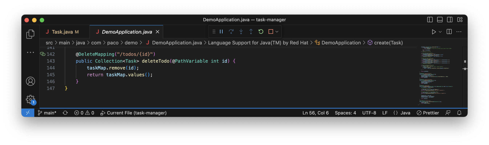

Week 06: To-do Application Part 2
(May 21- May 28) Frontend and Backend Development
After one more week of work I got my java API up and running, like with the frontend the trick was to start by building the most basic implementation of a todo app posible, only including id, text and done/undone status. Once I built that and connected to it with Postman I could start iterating on it, adding the endpoints and all the attributes a todo had to have to be up to the project specifications.
 The frontend was updated as well to be in line with the specifications for the UI. Most of the functionality that was previously located in the frontend like sorting and filtering was moved to the backend, the only functionality of this type that remained coded in the frontend was the pagination control. I consider this to be the only real deviation from the project specifications, I have to be honest and say I simply didn't manage to move it to the backend without breaking basically everything in the frontend.
Let's review the specifications for the UI:
- Search/Filtering Controls
- New To Do Button. This should open a modal to type the “to do” data.
- Priority column should show in the header the classic up and down arrows to allow the user to sort.
- Due date column should show in the header the classic up and own arrows to allow the user to sort.
- Action column to show actions (links/buttons) to allow the user to delete or edit a “to do”.
- Pagination control. Showing the pages, its number and the next and previous page is enough.
- Area to show the metrics
I think it's all there, I might add a parenthesis on number 5: The full specifications said that we could use a modal similar to the one used to add a todo, in the case of editing I decided not to grey out the rest of the page, to make it faster if I chose to edit multiple todos at the same time.
We'll look at some of this points closer as we walk through the backend specifications.
GET Endpoint
The GET endpoint is by far the most complicated, as it has to handle sorting and search, a total of 4 request parameters. Despite this I think it's relatively straightforward and self-explaining, somments have been added to point what each section does:
In our app this endpoint is called to not only on loading or searching but basically anytime a todo is updated, marked as complete or added, as it's our means of updating the display of todos without resorting to refreshing the page.
POST Endpoint
The POST endpoint is set to receive a task object, it performs validations by making sure the received task has the bare minimum attributes required, a text field and a priority. In theory it is also impossible to submit an empty Todo from the frontend.
As specified, the POST request is made when we click "Add" on our modal element. Priority is set to "Low" by default and the user is not given the choice to submit a todo without a priority.
PUT Endpoints
There are actually three separate PUT requests that can be made to the API, one for the edit menu where we can change a todo's text, priority and due date, one for marking a todo as done, and a final one to mark a todo as undone. I personally would have preferred to use a single "toggle" endpoint to manage both done and undone states, but such was the specification.
 Each endpoint receives an ID in order to find the todo that is going to be updated. In the case of the updateTodo function we also receive a task object containing the new information, the same basic validations as in the createTodo function are also performed. DELETE Endpoint
Something that was missing in the original specification was an endpoint in the API to delete todos, the especifications only said that we should have the means to do it but not how. If there was another way to achieve the same thing it didn't seem obvious to me.
Conclusion
It's hard for me to write a conclusion to this entry because there is still work left to do, namely implementing the tests. However speaking on the experience so far I have to say this project taught me to ask for help when stuck, I lost a good four days of progress just trying to figure out how to run the Java backend, when I finally decided to just ask someone we got the basics of the API done in about three hours. For the tests I'll go straight to the point and ask one of the other apprentices who has already implemented them in their apps.
Uploaded on May 28, 2023